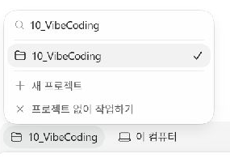
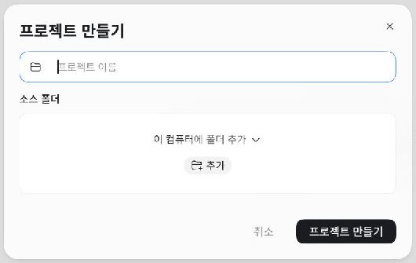
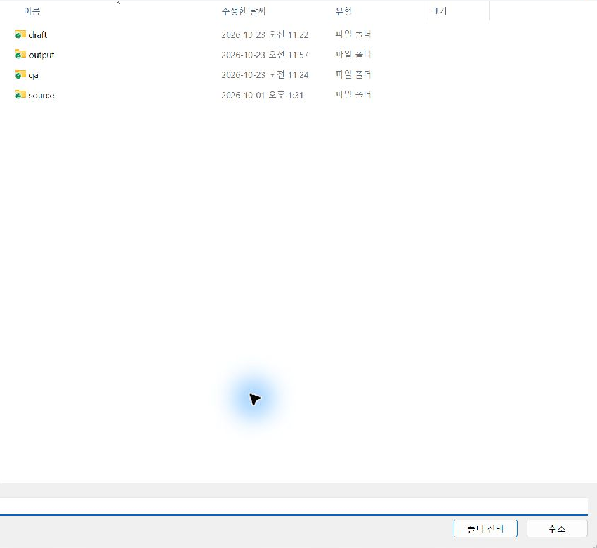
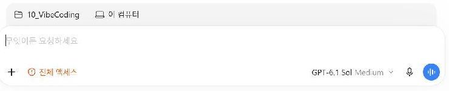
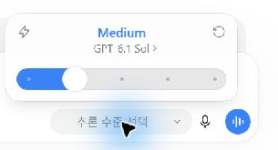
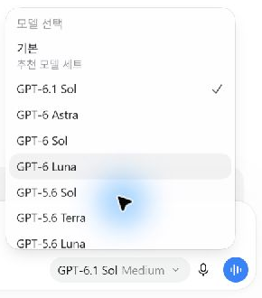
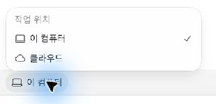
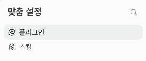
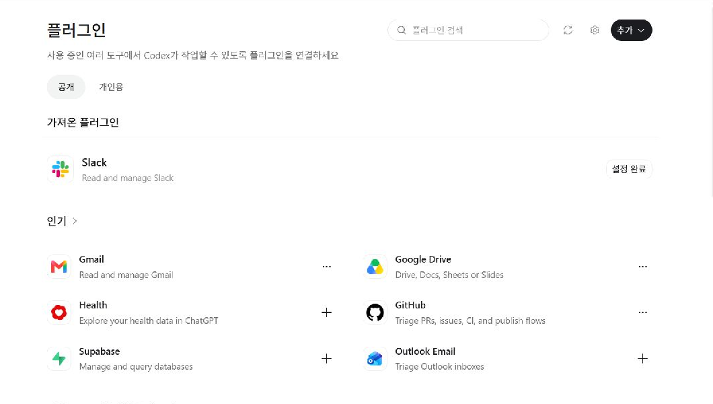
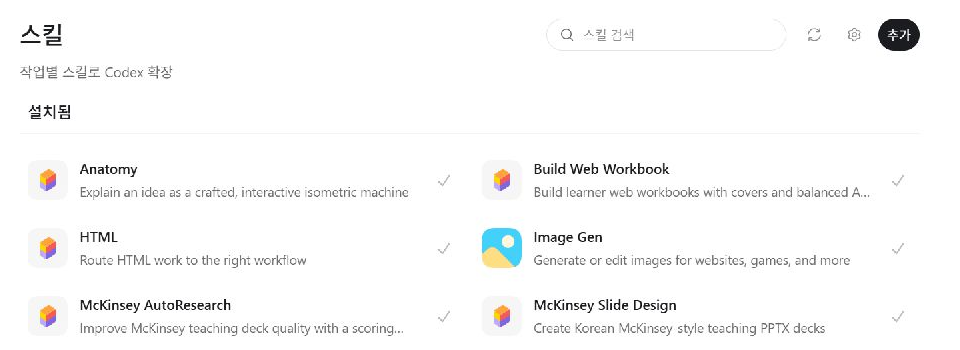

맥락은 내가 주고,
결과도 내가 판단합니다.
내 업무에서 바꾸고 싶은 장면을 말하고, AI가 만든 결과를 보며 다음 요청을 고칩니다. 처음부터 완벽한 설명을 준비할 필요는 없습니다. 작은 결과를 받아 보면 내가 원하는 것도 더 분명해집니다.
맥락을 준다.
생각을 한다.
누가 어떤 상황에서 무엇을 하는지, 무엇이 불편한지 이야기합니다. 어떤 결과가 좋은지는 내가 판단합니다.
작게 만들어본다.
결과 훈수를 둔다.
간단한 초안부터 받아 보세요. “이 부분이 내 뜻과 다릅니다”라고 구체적으로 말하면 다음 결과를 개선할 수 있습니다.
타인의 것을
빌려온다.
좋은 예시, 익숙한 양식, 이미 있는 플러그인과 스킬을 활용합니다. 참고한 자료의 출처와 사용 조건도 확인합니다.
내 생각 말하기 → 학습 기록 확인 → 필요한 기능 붙이기 → 생각 정리 파트너 만들기 → 내 업무 아이디어 계획하기
오늘의 150분
| 구간 | 시간 | 직접 해볼 일 |
|---|---|---|
| 자세 | 15분 | 내 역할과 AI의 역할 |
| 첫 대화 | 25분 | 학습 폴더·말하기·기록 확인 |
| 환경·모델 | 15분 | 작업 위치와 모델 선택 |
| 플러그인 | 10분 | Firecrawl 안내·Computer Use 시연 |
| 휴식 | 10분 | 휴식·개별 환경 지원 |
| 스킬 만들기 | 25분 | 생각 정리 파트너 제작·시험 |
| 개인 계획 | 40분 | 새 주제 폴더·계획·두 문서 |
| 마무리 | 10분 | 내 결과와 다음 행동 확인 |
진행 상황에 따라 실습·시연 비중은 조정합니다.
앱 설치와 로그인 준비는 사전 준비 안내에서 확인하실 수 있습니다.
말로 풀어놓은 생각을
내 학습 기록으로 남깁니다.
8주 동안 느낀 점과 업무 적용 아이디어를 모을 장소부터 만듭니다. 오늘은 간단한 생각을 말하고, AI가 이해한 내용을 확인하는 것부터 시작합니다.
학습 기록용 폴더를 만듭니다
탐색기에서 문서를 열고, 바이브 코딩 교육 정리 폴더를 만드세요. 그 안에 바이브 코딩 학습 폴더를 만듭니다. 이미 있다면 그대로 사용합니다.
문서/ └─ 바이브 코딩 교육 정리/ └─ 바이브 코딩 학습/
성공 표시: 탐색기에서 ‘바이브 코딩 학습’ 폴더를 열 수 있습니다. 문서의 실제 위치는 컴퓨터마다 다를 수 있으므로 화면에서 찾습니다.
새 채팅에서 학습 폴더를 연결합니다
- Codex에서 새 채팅을 엽니다.
- 입력창 위의 프로젝트 선택을 눌러 새 프로젝트를 만듭니다.
- 프로젝트 이름은 ‘바이브 코딩 학습’으로 정하고, 소스 폴더는 방금 만든 바이브 코딩 학습을 선택합니다.
- 작업 위치는 이 컴퓨터로 확인합니다. 만들어진 학습 프로젝트의 채팅에서 이어갑니다.

프로젝트 만들기·폴더 선택 화면 보기


성공 표시: 학습용 프로젝트가 선택되어 있고 연결한 폴더를 다시 찾을 수 있습니다. 이미 프로젝트를 만들었다면 새로 만들지 말고 선택하세요. 위치가 다르면 조교와 확인합니다.
정리되지 않은 생각도 먼저 말해 봅니다
아래 요청을 먼저 입력한 뒤, 내가 하는 일·교육에 대한 기대·번거로운 업무·8주 뒤 바라는 변화를 1~2분 말해 보세요. 질문을 완벽히 정리해서 말할 필요는 없습니다.

지금부터 이 교육을 시작하는 생각과 제 업무에서 바꾸고 싶은 일을 말하겠습니다. 정리가 안 되어 있어도 제 말을 먼저 들어 주세요. 제가 말한 사실, 바라는 변화, 아직 정하지 않은 것을 나눠 정리해 주세요. 중요한 내용이 부족하면 한 번에 하나씩 질문해 주세요. 제가 확인하기 전에는 프로젝트 방향을 확정하거나 구현하지 마세요.
확인: AI가 내 업무를 맞게 이해했나요? 내가 말하지 않은 결정을 추가하지 않았나요? 잘못 이해한 부분을 하나 고쳐 주세요. 음성 입력이 안 되면 같은 내용을 짧게 타이핑해도 됩니다.
방금 제가 확인한 내용을 현재 연결된 학습 폴더에 학습기록.md로 저장해 주세요. 제 업무, 교육에 대한 기대, 바라는 변화, 아직 확인할 점을 담아 주세요. 제가 말하지 않은 사실·일정·결정을 만들지 마세요. 같은 이름의 파일이 이미 있으면 덮어쓰지 말고 어떻게 추가할지 먼저 물어보세요. 저장한 파일의 위치와 여는 방법을 알려 주세요.
성공 표시: ‘학습기록.md’를 직접 열었고, 내 뜻과 다른 부분을 한 번 수정했습니다. 낯선 .md 확장자는 뒤에서 살펴봅니다.
지금 어디에서 일하고,
어떤 모델을 쓰는지 확인합니다.
프로젝트는 관련 대화와 자료를 묶는 단위이고, 폴더는 파일이 있는 장소입니다. 모델은 요청을 처리하는 AI이며, 추론 수준은 문제를 얼마나 깊게 검토할지 고르는 설정입니다.
| 상황 | 수업에서 사용할 선택 | 맡겨볼 일 |
|---|---|---|
| 우선 시작할 때 | GPT-6.1 Sol · Medium | 일반적인 대화·문서·기획 |
| 요청이 많고 사용량이 부담될 때 | GPT-6 Luna | 범위가 분명한 짧고 반복적인 정리 |
| 특히 어려운 문제를 검토할 때 | GPT-6 Astra | 여러 조건과 단계를 함께 검토하는 일 |
이 표는 수업의 선택 기준입니다. 계정에 따라 보이는 모델이 다를 수 있습니다. 모델을 바꾸더라도 결과 확인은 필요합니다.
모델과 Medium을 따로 확인합니다
- 입력창 아래의 모델 표시를 누릅니다.
- 추론 수준 패널 안의 모델명을 눌러 모델 목록을 확인합니다.
- GPT-6.1 Sol을 선택하고 추론 수준을 Medium으로 확인합니다.

모델 목록과 실행 위치 보기


성공 표시: 내 모델과 추론 수준, 작업 위치를 화면에서 찾을 수 있습니다. 모델이 보이지 않으면 조교에게 현재 화면을 보여 주세요.
클라우드·원격·권한은 어떻게 다른가요?
‘이 컴퓨터·클라우드’는 일을 실행할 위치입니다. 프로젝트 소스 폴더의 ‘원격 기기’는 다른 컴퓨터를 연결하는 항목으로, 클라우드와 같은 뜻이 아닙니다. 오늘은 원격 연결을 새로 설정하지 않습니다.
작업 폴더를 고르는 것과 실행 권한을 허용하는 것도 다릅니다. 캡처의 ‘전체 액세스’는 강사 환경의 표시이며 수강생 필수 설정이 아닙니다. 승인 요청이 나오면 대상과 내용을 읽고 판단하세요.
이미 있는 기능을 찾아
필요한 일을 맡깁니다.
플러그인은 기능·연결 도구·스킬 등을 설치하는 묶음입니다. 스킬은 특정 일을 반복할 때 따르는 절차와 자료입니다. 같은 설명을 매번 반복하거나 기능을 처음부터 만들기 전에, 이미 있는 것을 찾아봅니다.

| 기능 | 내 업무에서 할 수 있는 일 | 오늘의 사용 |
|---|---|---|
| Firecrawl | 공개 웹페이지의 내용을 읽어 정리에 활용 | 검색·설치 위치 확인과 짧은 페이지 읽기 |
| Computer Use | 앱 화면을 보고 클릭·입력 | 준비된 강사 시연 관찰 |
| Google Drive | 연결한 계정의 문서를 찾아 활용 | 필요할 때 연결할 기능으로 알아두기 |
Firecrawl로 공개 페이지 한 곳을 읽습니다
- 왼쪽 기능 메뉴에서 플러그인을 엽니다. 위치가 다르면 맞춤 설정의 플러그인 항목을 찾습니다.
- Firecrawl을 검색하고 설명과 제공 기능을 확인합니다.
- 설치되지 않았다면 설치를 진행합니다. 연결·인증 안내가 나오면 본인 계정에서 진행하고 비용·권한 안내를 확인합니다.
- 채팅으로 돌아와 아래 요청을 입력합니다. 도구가 선택되지 않으면 플러그인 선택에서 Firecrawl을 지정합니다.
플러그인 검색 화면 보기

Firecrawl을 사용해서 아래 공개 페이지 한 곳을 읽어 주세요. https://docs.firecrawl.dev/introduction 이 서비스가 하는 일을 비개발자도 이해할 수 있는 한국어로 설명하고, 제 업무에서 활용할 수 있는 장면을 두 가지 제안해 주세요. 페이지에서 확인한 내용과 당신의 활용 제안을 구분해 주세요. 출처 제목과 URL을 붙이고 읽지 못한 내용은 추측하지 마세요. 다른 페이지를 추가로 수집하거나 계정 설정을 변경하지 마세요.
성공 표시: 출처가 표시되어 있고, 원문에서 확인한 내용과 AI의 제안이 구분되어 있습니다. 링크를 직접 열어 요약의 핵심 한 가지를 대조하세요.
막히면: 검색·설치·연결 중 어느 단계인지 조교에게 보여 주세요. 연결이 되지 않으면 강사의 결과를 함께 확인하고 다음 실습으로 이어갑니다.
강사 시연 · Computer Use가 메모장에 입력하기
화면 조작은 앱 찾기와 확인에 시간이 걸릴 수 있습니다. 오늘은 강사가 연결을 확인하고 빈 메모장을 준비한 상태에서 시연합니다. Windows에서는 조작 중 마우스·키보드를 잠시 맡깁니다.
Computer Use로 현재 열려 있는 메모장의 빈 새 탭에 아래 세 줄을 한 번에 입력해 주세요. 입력 전 필요한 화면 확인과 입력 후 결과 확인을 하고, 내용이 보이면 멈춰 주세요. 저장하지 마세요. 나의 8주 학습 목표 내 업무에서 반복되는 불편을 하나 찾아본다. 작게 만들어 보고 직접 확인하면서 개선한다. 기존 문서는 바꾸거나 외부로 보내지 마세요.
관찰할 것: 채팅의 완료 문장과 실제 메모장 화면이 일치하는지 확인합니다. 직접 체험하고 싶은 분은 연결·앱 접근을 확인한 후 같은 요청을 사용할 수 있습니다.
반복해서 쓸 일하는 방법을
내 스킬로 만듭니다.
원하는 결과를 얻었는데 다음에도 같은 설명을 반복하고 있나요? 스킬은 특정 일을 할 때 다시 꺼내 쓸 절차와 자료를 묶어 둔 것입니다. 한 번만 할 일은 채팅으로 요청하고, 같은 방법을 반복해서 쓰고 싶을 때 스킬을 활용합니다.
강사는 실제로 이렇게 사용합니다
| 실제 활용 사례 | 스킬에 담아 두는 방법 | 매번 바뀌는 재료 |
|---|---|---|
| 인쇄용 워크북 | 설명·표·프롬프트·활동 구성과 인쇄 확인 | 교육 대상, 목표, 원고, 활동 |
| 웹 워크북·웹 교재 | 설명 → 실습 → 성공 확인, 복사 요청·체크·메모 구성 | 수업 흐름, 자료, 예시 |
지금 보는 교재의 설명·요청 상자·확인 항목도 이런 제작 기준의 예입니다. 같은 원리로 보고서 작성이나 슬라이드 구성 방법을 스킬로 만들 수 있습니다.
보고서·슬라이드로 확장하면?
| 확장 예시 | 반복할 절차 | 매번 전달할 것 |
|---|---|---|
| 보고서 작성 | 독자·목적 확인 → 자료 정리 → 판단과 근거 → 검토 | 보고 대상, 이번 자료, 기준일 |
| 슬라이드 구성 | 청중·목적 확인 → 이야기 흐름 → 장별 메시지와 근거 | 발표 대상, 시간, 원고·자료 |
실제 파일 제작에는 그 형식에 맞는 도구도 필요합니다. 오늘 보고서·슬라이드 스킬까지 모두 만들지는 않습니다. 이미 쓸 만한 스킬이 있다면 먼저 사용해 보고 내 기준이 반복해서 필요할 때 보완하거나 만드세요.
프로젝트 지침과 무엇이 다른가요?
오늘처럼 이 컴퓨터의 폴더에서 작업할 때는 공통 업무 기준을 AGENTS.md에 남깁니다. 스킬은 특정 작업을 할 때 선택할 절차입니다.
| 구분 | 역할 | 예 |
|---|---|---|
| AGENTS.md | 이 폴더에서 기본으로 지킬 기준 | 한국어로 설명, 원본 보존, 사실을 추측하지 않기 |
| PLAN.md | 이번 과제의 목표·범위·순서·미정 기록 | 무엇부터 만들고 어떻게 확인할지 |
| 스킬 | 필요한 작업에 꺼내 쓸 절차 | 생각 구체화, 보고서 작성, 슬라이드 구성 |
한 프로젝트에서 같은 정리만 한다면 AGENTS.md로 충분할 수 있습니다. 조사·보고·기획 등 여러 일을 한다면 작업별 절차를 스킬로 나눠 선택할 수 있습니다. 상세한 절차를 양쪽에 똑같이 복사할 필요는 없습니다.
처음에는 스킬 이름을 직접 지정합니다. Codex가 요청과 스킬 설명이 맞는다고 판단하면 자동 선택할 수도 있지만, 모든 요청에 항상 적용되는 것은 아닙니다. 저장 범위와 활성 상태·자동 선택 설정에 따라서도 달라집니다.
스킬을 써도 결과 확인이 필요한 이유
스킬은 일하는 방법을 재사용하게 해 주지만 결과의 정확성을 보장하지는 않습니다. 같은 누락이 반복되고 기계적으로 검사할 수 있는 기준이라면 검사 도구를 만들 수 있습니다. 그 검사를 특정 시점마다 자동 실행하도록 연결하는 것이 훅입니다. 훅 자체가 좋은 판단을 대신하지는 않습니다. 실제 검사와 자동 실행은 이후 반복·자동화 실습에서 다룹니다.
생각 정리 파트너를 만듭니다
쓸 때: 하고 싶은 말은 있지만 무엇이 문제인지, 무엇부터 정할지 막연할 때입니다. 내 뜻을 먼저 확인하고, 필요한 질문을 통해 생각을 구체화하도록 만듭니다.

학습용 프로젝트의 채팅에서 $skill-creator를 입력해 스킬을 선택하고 아래 요청을 보냅니다.
$skill-creator를 사용해서 ‘생각 정리 파트너’ 스킬을 만들어 주세요. 스킬 식별 이름은 thought-partner로 하고 설명과 지침은 한국어로 작성해 주세요. 제가 정리되지 않은 생각이나 막연한 업무 아이디어를 말할 때, 제 뜻을 확인하고 필요한 질문으로 생각을 구체화하도록 돕는 스킬입니다. 진행 방법: 1. 제 말을 먼저 듣고, 이해한 내용을 짧게 되돌려 확인하세요. 2. 이미 답한 것은 반복해서 묻지 마세요. 3. 중요한 빈칸을 한 번에 하나씩 질문하세요. 첫 정리는 핵심 질문 세 개 이내로 진행하고, 모르는 것은 미정으로 남기세요. 정보가 충분하면 질문을 억지로 만들지 마세요. 4. 제 뜻을 확인한 뒤 다음 항목으로 짧게 정리하세요. - 제가 원하는 것 - 제가 결정한 것 - AI가 제안한 것 - 아직 정하지 않았거나 확인할 점 - 제가 정한 다음 행동 처음부터 특정 앱이나 시스템을 만들자고 결론 내리지 마세요. 제가 정하지 않은 사실·일정·결정·다음 행동은 만들지 마세요. 단순한 사실 질문이나 이미 명확한 수정 요청까지 기획 상담으로 바꾸지 마세요. 요청하기 전에는 구현·외부 공개·발송을 하지 마세요. 외부 서비스 연결이나 별도 프로그램 실행 없이 사용할 수 있게 만들어 주세요. 이 컴퓨터의 제 다른 프로젝트에서도 쓸 수 있도록 사용자 범위의 저장 위치를 확인해 주세요. 완료 후 실제 이름, 저장 위치, 사용 가능 범위, 새 채팅에서 선택하는 방법을 알려 주세요.
확인: Creator가 만든 기준이 내 뜻과 맞는지 읽어 보세요. 다른 프로젝트에서 쓸 수 있는 저장 범위인지도 확인합니다. 식별 이름은 호출에 쓰는 이름이며, 개인 프로젝트 폴더까지 영어로 바꿀 필요는 없습니다.
막연한 생각으로 호출하고 시험합니다
생성한 스킬을 선택합니다. 실제 이름이 다르면 아래 첫 줄의 이름을 바꾸세요. 스킬 이름 뒤에 이번에 정리할 상황을 함께 전달합니다.
$thought-partner 회사 자료가 여기저기 있어서 필요한 것을 찾는 데 시간이 걸립니다. 뭔가 개선하고 싶지만 정리 규칙부터 필요한지, 문서를 찾는 방법부터 바꿔야 할지 아직 모르겠습니다. 제 생각을 먼저 이해하고 무엇을 더 확인하면 좋을지 함께 정리해 주세요.
성공 표시: 이해한 상황을 내가 확인할 수 있고, 필요한 질문을 한 번에 하나씩 합니다. 처음부터 ‘검색 시스템을 만들자’고 확정하지 않으며, 내가 정하지 않은 행동은 미정으로 남깁니다.
AI가 너무 빨리 결론 내리면
지금은 해결책을 확정하기보다 제 상황과 생각을 구체화하고 싶습니다. 방금 결과에서 제가 말한 사실, 제가 결정한 것, AI의 제안, 미정 사항을 구분해 주세요. 제 뜻을 확인하지 않고 결론 내린 부분이 있으면 다시 질문해 주세요. 이 원칙이 반복해서 적용되도록 thought-partner 스킬의 지침도 수정해 주세요. 바꾼 기준을 알려 주세요.
다른 생각에도 다시 써 보고 싶다면
$thought-partner 직원 교육을 바꾸고 싶은데 무엇이 문제인지부터 정리하고 싶습니다. 자료는 많이 전달하지만 현업에서 활용하는지는 잘 모르겠습니다. 교육 형태와 구체적인 일정은 아직 정하지 않았습니다. 제 뜻을 확인하면서 생각을 구체화해 주세요.
막히면: 이름을 지정해도 스킬이 보이지 않는지, 선택은 됐지만 결과가 다른지 나눠 확인하세요. 저장 범위·실제 이름·읽은 지침을 확인하고 조교와 결과를 함께 봅니다.
새 주제 폴더에서
내 업무의 첫 범위를 정합니다.
학습 기록에서 번거로운 업무 장면 하나를 고릅니다. 아직 만들 도구의 이름을 몰라도 괜찮습니다. 누가 언제 무엇을 하다가 불편한지부터 이야기해 봅니다.
큰 주제로 새 폴더를 만듭니다
문서 → 바이브 코딩 교육 정리 안에 본인 아이디어의 큰 주제로 폴더를 하나 만드세요. 한국어 이름으로 지어도 됩니다. 예를 들어 ‘고객관리’, ‘회사 자료 정리’, ‘영업 업무 개선’입니다.
문서/
└─ 바이브 코딩 교육 정리/
├─ 바이브 코딩 학습/
└─ 고객관리/
├─ PLAN.md
└─ AGENTS.md
두 파일은 계획을 합의한 뒤 만듭니다. 폴더는 큰 주제 ‘고객관리’로 정하고, 첫 과제는 ‘상담 후 연락할 고객 정리’처럼 대화로 좁히면 됩니다.
- 새 채팅에서 새 프로젝트를 만들고 이번에는 본인의 주제 폴더를 연결합니다.
- 학습 기록에서 고른 업무 불편과 바라는 변화를 짧게 복사하거나 다시 말합니다.
- 현재 프로젝트·폴더가 학습용 폴더와 다른지 확인합니다.
생각 정리 파트너와 내 생각을 구체화합니다
새 개인 프로젝트에서 $thought-partner를 선택합니다. 앞 채팅의 내용을 자동으로 안다고 가정하지 말고 내가 하는 일·불편한 장면·바라는 변화를 자유롭게 말해 보세요.
$thought-partner 이 프로젝트에서 제 업무 아이디어를 구체화하고 싶습니다. 지금부터 제가 하는 일, 불편한 장면, 바라는 변화를 자유롭게 말하겠습니다. 현재 작업 폴더를 확인하고 제 생각을 먼저 들어 주세요. 부족한 내용은 한 번에 하나씩 질문하며 함께 정리해 주세요. 큰 방향과 먼저 시험할 작은 범위를 구분해 주세요. 제가 확인하기 전에는 계획 파일을 만들거나 구현하지 마세요.
성공 표시: 대화 전보다 내 뜻이 분명해지고, 내가 결정한 것과 AI가 제안한 것이 구분됩니다. 모르는 것은 미정으로 남겨도 됩니다.
생각이 정리되면 실행 계획으로 넘어갑니다
생각 정리의 결과가 곧 확정된 실행 계획은 아닙니다. 내 뜻과 첫 범위를 확인한 뒤 자료·순서·완료 기준을 구체화합니다. 강사 시연으로 다음 두 방법을 비교하고 하나를 선택하세요.
A · 계획 모드
입력창의 + 메뉴에서 계획 모드를 선택합니다. 맥락과 부족한 조건을 확인하고 구현 전에 계획을 검토합니다.
B · 일반 대화
모드를 켜지 않아도 “지금은 계획만 논의하고 구현하지 마세요”라고 요청할 수 있습니다. 합의한 내용을 파일로 남깁니다.
일반 대화의 요청은 계획 모드와 동일한 실행 제한을 제공하는 설정은 아닙니다. 계획 모드가 보이지 않으면 B로 진행하고 조교와 확인하세요. 합의한 계획을 파일로 남기는 방법은 다음 07에서 이어갑니다.
계획은 PLAN.md에,
일하는 기준은 AGENTS.md에.
Markdown은 제목과 목록을 간단한 기호로 적는 텍스트 문서 방식입니다. 파일 이름 끝의 .md가 그 표시입니다. 별도 문법을 모두 외울 필요는 없습니다.
# 내 업무 아이디어 - 해결하고 싶은 불편 - 처음 만들 작은 결과 - [ ] 다음에 확인할 일
#은 제목, -는 목록, - [ ]는 할 일 표시입니다. Codex에서 파일을 열어 읽어 보세요. 화면에 따라 기호가 그대로 보이거나 문서 형태로 보일 수 있습니다.
| 파일 | 역할 | 담을 내용 |
|---|---|---|
| PLAN.md | 이번에 무엇을 어떤 순서로 할지 정하는 계획서 | 업무 불편·사용할 사람·첫 범위·자료·확인 기준·미정·다음 행동 |
| AGENTS.md | 이 폴더에서 AI가 일할 때 지킬 업무 안내문 | 내 업무 맥락·답변 방식·원본 보존·추측하지 않기·공개 전 확인 |
PLAN.md는 수업에서 정한 이름입니다. 다음에 “PLAN.md를 읽고 이어서 진행해 주세요”라고 요청해 활용합니다. AGENTS.md는 Codex가 작업 지침으로 읽는 지정 파일이므로 이름을 정확하게 씁니다. Agent.md와 구분하세요.
합의한 계획만 파일로 저장합니다
계획 모드를 사용했다면 계획을 검토한 뒤 일반 대화로 돌아옵니다. 아직 구현으로 넘어가지 않고 아래 요청으로 합의한 문서만 저장합니다.
제가 확인한 계획만 현재 개인 프로젝트 폴더의 PLAN.md로 저장해 주세요. 업무 불편, 사용할 사람, 첫 결과와 범위, 사용할 자료, 이번에 하지 않을 일, 확인 기준, 미정 사항, 다음 행동을 담아 주세요. 제 결정과 AI의 제안을 구분하고 아직 모르는 내용은 미정으로 남겨 주세요. 이미 파일이 있으면 덮어쓰기 전에 기존 내용과 비교해 주세요. 지금은 이 계획 문서만 저장하고 구현하거나 배포하지 마세요. 저장 위치와 제가 확인할 부분을 알려 주세요.
실제로 필요했던 규칙을 남깁니다
현재 개인 프로젝트 폴더에서 사용할 AGENTS.md 초안을 제안해 주세요. 제 업무 맥락과 다음 기준을 짧게 담아 주세요. - 한국어로 쉽게 설명하기 - 확인되지 않은 사실은 추측하지 않고 질문하거나 미정으로 표시하기 - 원본 자료를 보존하고 저장 위치를 알려 주기 - 목표·범위를 바꿀 때 먼저 제 의견 확인하기 - 외부 공개·배포·발송·삭제 전에는 제 확인 받기 제가 내용을 확인한 뒤 이 폴더에 저장해 주세요. 기존 AGENTS.md가 있으면 먼저 읽고 필요한 부분만 제안해 주세요. 새 채팅에서 이 지침을 확인하는 방법도 알려 주세요.
업무 안내문은 일하는 기준을 전달하는 문서입니다. 실행 권한을 기술적으로 차단하는 설정은 별도입니다. 오늘은 규칙을 길게 늘리기보다 실제로 필요한 4~5가지를 확인합니다.
두 파일을 열고 새 채팅에서 확인합니다
파일을 직접 열어 내 뜻과 맞는지 확인합니다. 같은 개인 프로젝트에서 새 채팅을 열고 아래 요청을 보내 보세요.
현재 프로젝트의 AGENTS.md와 PLAN.md를 읽어 주세요. 읽은 파일 위치, 앞으로 지킬 작업 기준, 계획의 첫 범위, 아직 확인할 점을 짧게 설명해 주세요. 지금은 파일을 수정하거나 구현하지 마세요.
성공 표시: 두 파일의 역할을 내 말로 설명할 수 있고 새 채팅의 요약이 파일 내용과 일치합니다. 파일을 못 찾으면 연결한 폴더와 저장 위치부터 확인하세요.
내가 확인한 결과와
다음 행동 하나를 남깁니다.
- 학습 기록: 내 말과 다른 내용을 고쳤나요?
- 생각 정리 파트너: 내 뜻을 확인하고 결정·제안·미정을 구분했나요?
- 개인 계획: 누구의 어떤 불편을 먼저 바꿀지 설명할 수 있나요?
- 두 문서: PLAN.md와 AGENTS.md가 내 주제 폴더에 있나요?
주제가 정해지지 않았다면 해결할 도구 이름 대신 업무에서 불편했던 장면 하나를 남기세요. 강사·조교와 첫 범위를 조정하면 됩니다.
작업이 꼬이거나 결과가 내 뜻과 다르다면
기대했던 결과, 실제 결과, 오류 문구를 함께 보여 주세요. 파일을 찾지 못하면 저장 위치부터 확인합니다. 계획이 커졌다면 먼저 시험할 작은 결과로 다시 좁힙니다. 조교의 도움을 받은 뒤에도 본인이 파일을 열고 결과를 다시 확인하세요.
공식 참고 자료
화면은 2026년 10월 25일 Windows 캡처 예시입니다. 앱 버전·운영체제·계정에 따라 메뉴와 사용 가능한 기능이 다를 수 있습니다.